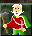

Widelands
Dieser Artikel wurde für die folgenden Ubuntu-Versionen getestet:
Ubuntu 16.04 Xenial Xerus
Zum Verständnis dieses Artikels sind folgende Seiten hilfreich:
 Widelands
Widelands  ist ein freies Echtzeit-Strategiespiel ähnlich Siedler-II. Ein komplexes Wirtschaftssystem muss unterhalten werden, um das Spielziel letztendlich zu erreichen. Das Spielziel kann der militärische Sieg über einen oder mehrere menschliche oder computergesteuerte Spieler sein, oder eines der vielen anderen Spielziele, wie "größte Warenmacht", "Besitz von mehr als der Hälfte des ganzen Landes" oder "Waldschrat: Sieger wird, wer nach 4 Stunden am meisten Bäume auf seinem Land stehen hat".
ist ein freies Echtzeit-Strategiespiel ähnlich Siedler-II. Ein komplexes Wirtschaftssystem muss unterhalten werden, um das Spielziel letztendlich zu erreichen. Das Spielziel kann der militärische Sieg über einen oder mehrere menschliche oder computergesteuerte Spieler sein, oder eines der vielen anderen Spielziele, wie "größte Warenmacht", "Besitz von mehr als der Hälfte des ganzen Landes" oder "Waldschrat: Sieger wird, wer nach 4 Stunden am meisten Bäume auf seinem Land stehen hat".
| Spieleszene |
Installation¶
Widelands kann auf verschiedene Arten und Weisen installiert werden, was sich vor Allem in der Aktualität der Versionen unterscheidet. Bei älteren Versionen (älter als Build16-rc1) gibt es unter Ubuntu leider ein Problem mit der Übersetzung. eine Lösung findet sich bei den Problemlösungen am Ende des Artikels.
Als deb Paket installieren¶
Aus den Paketquellen (englisch)¶
Widelands kann in einer älteren Version aus den Ubuntu universe Quellen geholt werden. Dafür ist folgendes Paket zu installieren [1]:
widelands (universe)
 mit apturl
mit apturl
Paketliste zum Kopieren:
sudo apt-get install widelands
sudo aptitude install widelands
Aus PPA-Quelle mit funktionierender deutscher Lokalisation (nur bis Ubuntu 13.10)¶
Dazu wird eine zusätzliche Paketquelle [2] verwendet:
Adresszeile zum Hinzufügen des PPAs:
ppa:widelands-dev/widelands
Hinweis!
Zusätzliche Fremdquellen können das System gefährden.
Ein PPA unterstützt nicht zwangsläufig alle Ubuntu-Versionen. Weitere Informationen sind der  PPA-Beschreibung des Eigentümers/Teams widelands-dev zu entnehmen.
PPA-Beschreibung des Eigentümers/Teams widelands-dev zu entnehmen.
Damit Pakete aus dem PPA genutzt werden können, müssen die Paketquellen neu eingelesen werden.
Installiert wird auch hier das Paket:
widelands (ppa)
mit apturl
Paketliste zum Kopieren:
sudo apt-get install widelands
sudo aptitude install widelands
Hinweis:
Widelands wird dann immer noch englisch gestartet! Es muss einmalig mit folgendem Befehl im Terminal gestartet werden.
widelands --localedir="/usr/share/games/widelands/locale" --language="de_DE.UTF8"
Installation einer tagaktuellen Entwicklungsversion¶
Adresszeile zum Hinzufügen des PPAs:
ppa:widelands-dev/widelands-daily
Hinweis!
Zusätzliche Fremdquellen können das System gefährden.
Ein PPA unterstützt nicht zwangsläufig alle Ubuntu-Versionen. Weitere Informationen sind der PPA-Beschreibung des Eigentümers/Teams widelands-dev zu entnehmen.
Damit Pakete aus dem PPA genutzt werden können, müssen die Paketquellen neu eingelesen werden.
Installiert wird auch hier das Paket:
widelands (ppa)
mit apturl
Paketliste zum Kopieren:
sudo apt-get install widelands
sudo aptitude install widelands
Das Softwarecenter wird sich automatisch öffnen. Widelands ist dann sofort auf deutsch.
Vorkompilierter offizieller Download¶
Von der Downloadseite der Entwickler kann die aktuelle Veröffentlichung heruntergeladen werden. Das Archiv muss nur entpackt werden [3]. Das Spiel selbst startet man dann durch Ausführen der Datei widelands.
Selber Kompillieren¶
Eine Anleitung zum Kompillieren von Wiedelands ist im Artikel Spiele/Widelands/Kompilieren zu finden.
Spielinhalt¶
Spielsteuerung¶
Als Siedler-II-Veteran wird man sich in Widelands wahrscheinlich schnell zurecht finden, da die Grundidee hinter diesem Spiel ähnlich ist.
Der Schwerpunkt in Widelands liegt in dem Aufbau eines wirtschaftlichen Netzes, das grob gesagt aus Gebäuden und Straßen besteht. Hierbei besitzt ein jedes Volk seine eigene, individuelle Wirtschaft, die den anderen Völkern gegenüber verschiedene Vor- und Nachteile hat.
Das erste Spiel¶
Nachdem ein Spiel gestartet wurde, wird eine Landschaft mit einem größeren Hauptquartier in der Mitte erscheinen. Um nun zu sehen, wo etwas gebaut werden kann, ist es sinnvoll den Baumodus zu wechseln. Rote, gelbe und grüne Häuser, verweisen auf Bauorte. Wo gelbe Flaggen geziegt werden, kann zwar keine Gebäude gebaut werden, dafür aber eine Flagge als Straßenabschnittspunkt gesetzt werden. Je mehr Flaggen auf einer langen Straße gesetzt werden, um so schneller ist der Warentransport.
rotes Haus = einfache Gebäude z.B. Fischerhütte-Holzfäller
gelbes Haus = erweiterte komplexe Gebäude z.B. Brauerei-Mühle
grünes Haus = größte umfangreichste Gebäude z.B. Bauernhhof-Schweinezucht
Durch einen  -Klick auf eine blaue Fahne öffnet sich ein Fenster. Hier ist es möglich die Anzahl der Waren einzustellen, die durchgehend in der gesamten Wirtschaft (alle Gebäude und Fahnen, die mit Straßen zusammenhängen) frei verfügbar sein sollen. Mit einem weiteren -Klick auf das Zeichen mit den Arbeitsgeräten öffnet sich das Fenster in dem die Mengeneinstellungen vorgenommen werden. Dazu einfach auf die entsprechende Ware klicken und mit + oder - hinzufügen oder verringern.
-Klick auf eine blaue Fahne öffnet sich ein Fenster. Hier ist es möglich die Anzahl der Waren einzustellen, die durchgehend in der gesamten Wirtschaft (alle Gebäude und Fahnen, die mit Straßen zusammenhängen) frei verfügbar sein sollen. Mit einem weiteren -Klick auf das Zeichen mit den Arbeitsgeräten öffnet sich das Fenster in dem die Mengeneinstellungen vorgenommen werden. Dazu einfach auf die entsprechende Ware klicken und mit + oder - hinzufügen oder verringern.
Alle Gebäude, die man errichtet oder errichten möchte, müssen mit Straßen verbunden werden. Wenn ein Bauplatz gefunden wurde und das Haus erbaut werden soll, hat es am Anfang nur eine Straße bis zur ersten Fahne. Nun den bunt markierten Straßenbaupunkten mit -Klicks folgen und die Straße wird verlängert, bis sie mit einer Fahne des Straßennetzes verbunden wurde. Danach weisen grüne (eben), gelbe (steiler) und rote (am steilsten) Punkte den Weg. Ziel sollte immer sein, die Wege so flach und gerade wie möglich zu halten und so viele blaue Fahnen wie möglich in dem Zwischenraum zu setzen.
Das eigene Territorium ist erweiterbar, nur in ihm kann gebaut werden. Um zu expandieren, muss in der Nähe der Grenze ein militärisches Gebäude errichtet und von Soldaten besetzt werden. Je größer das militärische Gebäude ist um so mehr Land wird eingenommen. Zusätzlich können höhere Gebäude, wie Türme weiter sehen. Die verschiedenen Militärgebäude fassen unterschiedlich viele Soldaten und vergrößern das Territorium unterschiedlich.
 Besondere Rohstoffe (Wasser, Kohle, Eisen, Granit, Gold) können mit Geologen gefunden werden. Diese werden ausgesendet, wenn man an einer Fahne auf den Geologen-Knopf klickt. Der Geologe wird dann die nähere Umgebung absuchen und Schilder mit farbigen Punkten für die jeweils gefundene Ressource aufstellen. Auch hier muss die Fahne natürlich mit dem restlichen Straßennetz verbunden werden.
Und wenn schließlich die ersten Bergwerke stehen, benötigt man auch noch eine Nahrungsindustrie um die Bergarbeiter zu versorgen. Hierbei gilt: Je größer und je tiefer das Bergwerk ist, desto besser muss auch die Verpflegung sein. So verbrauchen die einfachen Minen der Barbaren Rationen (Taverne), Tiefe Minen Snacks (Inn) und Tiefere Minen Mahlzeiten (Big Inn).
Die Soldaten¶
Soldaten gehen von allein in neu gebaute militärische Gebäude, bis die maximale Anzahl erreicht ist. Soldaten stehen aber nicht unbegrenzt zur Verfügung, sondern müssen im Hauptquartier (oder einem Warenlager) rekrutiert werden. Das Rekrutieren geschieht von selbst, sobald neue Soldaten benötigt werden und die Waren zum Rekrutieren vorhanden sind. Die benötigten Waren sind: Ein Träger + (bei den Barbaren) 1 Axt; (beim Imperium) 1 Holzlanze + 1 Helm; (bei den Atlantern) 1 leichter Dreizack + 1 Wappenrock.
Die Soldaten können darüber hinaus weiter ausgebildet werden - ein höheres Level erreichen. Zur Ausbildung von Soldaten ist ein "Trainingslager" und oder eine "Arena" notwendig (bei den Atlantern das Labyrinth bzw. das Verlies). Diese müssen mit allem Notwendigen versorgt werden. Sobald die Soldaten voll ausgebildet sind gehen sie von allein zum Hauptquartier zurück.
Einfaches Training kann dabei schon durch verschiedene Nahrungsmittel (z.B. Starkbier, Brot und Fleisch bei den Barbaren) begonnen werden - also schon bevor Bergwerke und Schmieden stehen.
Wirtschaftssystem¶
Eine Kurzübersicht findet sich im Widelands-Wiki . Für alle neueren Versionen bietet die Spielhilfe für Barbaren und für's Empire zusätzlich zum Tutorial einen Einstieg an.
Internetspiel¶
Das Internetspiel ist noch in einem frühen Stadium. Um an einem Internetspiel teilnehmen zu können, kann man sich entweder als Gast oder mit einem Benutzeraccount anmelden. Einen Benutzeraccount bekommt man durch die Anmeldung auf Widelands.org . Sobald die Registrierung abgeschlossen ist, wird noch ein Passwort für den Metaserver benötigt, dass auf der folgenden Seite gesetzt werden kann Passwort  (Falls man gerade nicht angemeldet ist, leitet einen die Webseite direkt nach der Anmeldung weiter).
(Falls man gerade nicht angemeldet ist, leitet einen die Webseite direkt nach der Anmeldung weiter).
Um auf den Metaserver zu gelangen, nachdem Widelands gestartet wurde die Spielvariante
"Mehrspieler -> Internetspiel" wählen.
In dem nun erscheinenden Fenster entweder einen beliebigen Namen eingeben und auf "Login" klicken (Gast-Anmeldung) oder unter "Nickname" den Benutzeraccount von Widelands.org eintragen, das Metaserverpasswort von Widelands.org eintragen und das Häkchen bei "Log dich mit einem registrierten Account ein" setzen (Anmeldung als Benutzer).
Jetzt öffnet der Metaserver ein Fenster. Im rechten oberen Bereich sind aktuelle Spiele zu finden. Falls ein Spiel offen ist, kann man es auswählen und auf "Beitreten klicken. Es können nur geöffnete Spiele gewählt werden.
In der untersten Zeile können Nachrichten eingetragen werden die von allen Anwesenden gelesen werden können. So kann man auch Hilfe auf Fragen erhalten.
Weitere wichtige Anmerkungen zum Spielen im Internet und insbesondere zum Eröffnen eines eigenen Spiels finden sich auf der Widelands-Wiki-Seite InternetGaming
Problemlösung¶
Da das Spiel noch in der Entwicklung ist, sind Probleme zu erwarten, sowohl durch Bugs als auch durch ungenügende Anleitung.
Widelands auf Deutsch umstellen¶
Hinweis:
Der aktuelle SVN und alle Versionen ab Build12 sollten mit der Einstellung "System default language" ("Systemstandard") die richtigen Übersetzungen anzeigen, falls Widelands in dem Verzeichnis gestartet wird, in dem die "locales" liegen.
Nach dem ersten Starten von Widelands wird eine Datei config im Ordner .widelands im Homeverzeichnis angelegt. In dieser ist eine Zeile language="de_DE" zu finden. Diese Zeile einfach mit language="de_DE.utf8" austauschen, Datei speichern und Widelands neu starten.
Wenn das keine Abhilfe schafft, dann kann Widelands auch über folgenden Befehl auf Deutsch gestartet werden:
widelands --localedir="/usr/share/games/widelands/locale" --language="de_DE.UTF8"
Gebäudeupgrade führt zur Stilllegung¶
Arbeitet nach einem Upgrade die Mine nicht weiter und oben erscheint die Meldung "One more Worker required", muss ein passender Arbeiter in der einfachen Version des Gebäudes ausgebildet werden und dieses dann abgerissen werden. Überhaupt dürfen Upgrades erst vorgenommen werden, wenn der Arbeiter in dem Gebäude die nächste Stufe erreicht hat.
- Erstellt mit Inyoka
-
 2004 – 2017 ubuntuusers.de • Einige Rechte vorbehalten
2004 – 2017 ubuntuusers.de • Einige Rechte vorbehalten
Lizenz • Kontakt • Datenschutz • Impressum • Serverstatus -
Serverhousing gespendet von